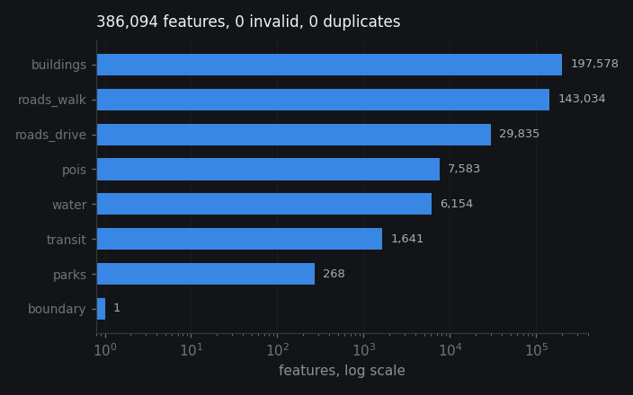

Raw OpenStreetMap data is messy: mixed coordinate systems, invalid geometries, duplicate features, inconsistent attribute schemas. This study builds a validating ETL pipeline that takes 386,094 features across eight Amsterdam layers (buildings, roads, water, parks, POIs, transit, boundaries) and normalises them into clean GeoParquet.
The finding: zero invalid geometries, zero repairs needed. OSM Amsterdam is already remarkably clean.
GeoPandasShapely 2OSMnxGeoParquetEPSG:28992

PreviewEight thematic layers extracted from OpenStreetMap Amsterdam, stacked to show spatial coverage.
386,094
Features
8
Layers
0
Invalid
0
Repaired
100%
Retained
200MB
Output
01Pipeline Stages
Each layer passes through eight deterministic stages. The pipeline is idempotent and restartable at any stage, so a crash mid-run resumes from the last completed step without re-downloading.
01 Acquire
OSMnx over Overpass, one call per layer. Bounding box covers Amsterdam municipality.
02 Inspect
Column types, CRS, validity flags written to JSON sidecar for each layer.
03 Normalise
Reproject to EPSG:28992 (Dutch metric). All downstream analytics in metres.
04 Validate
is_valid on every geometry. Flags self-intersections, ring errors, degenerate polygons.
05 Repair
make_valid on flagged geometries. In practice: none flagged across all eight layers.
06 Transform
Area derivation, WKB deduplication, sparse column drop. Geometry is the stable identity.
Per-layer QA summary as machine-readable CSV. Zero-row reports are published, because they are real measurements.
02Results & QA
Buildings and walking network dominate by three orders of magnitude. All layers pass validation with zero repairs, zero duplicates, 100% feature retention.
Features by layer
Log scale. Buildings and walking network dominate.
Layer
Features
Size
File size by format (POI layer)
GeoParquet is 89% smaller than GeoJSON through columnar compression.
Format
Size MB
Read time (warm process)
Parks and transit layers, after pyarrow is loaded.
Layer + Format
Read s
Write s
Size MB
Layer
In
Out
Invalid
Repaired
Duplicates
Size
Layer
Format
Size MB
Write s
Read s
Bold values indicate cold-start measurements dominated by pyarrow import time.
03Decisions & Limits
Design choices that shaped the pipeline, and known boundaries of this single-city extract.
Reporting
Publish the empty QA report. Zero repairs is a real measurement. Inventing failures for narrative would be contradicted by the CSV on disk.
Benchmarking
Keep the anomaly, explain it. The 3.531s Parquet read is a pyarrow import cost, not a format problem. The pipeline now reports warm and cold separately.
Repair policy
make_valid, never drop. Dropping invalid geometries silently loses data. make_valid inserts minimum vertices to resolve self-intersections.
Projection
Metric CRS in the middle. EPSG:28992 for analytics, EPSG:4326 only at export. Areas in square degrees are a category error.
Deduplication
Hash the WKB, not attributes. Geometry is the stable identity, since two contributors may disagree on names but agree on outlines.
One extract
Zero invalid geometries is specific to Amsterdam via OSMnx on one day. Different cities or raw Overpass responses would likely not be this clean.
No topology
Every geometry is individually valid, but no checks for overlapping parks, road network connectivity, or intersecting footprints.
Full refresh
Every run re-extracts everything. At national scale, incremental updates from OSM diff feeds would be required.
Overpass
Large bounding boxes or frequent runs hit Overpass quotas. Production would use a local planet extract.